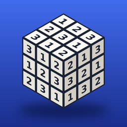

隱私權政策
立方體數獨（Cube Sudoku）· 生效日期：2026 年 10 月 27 日
本 App 不收集任何個人資料。沒有遊戲帳號、伺服器、廣告、分析或追蹤工具，也不會跨 App 或網站追蹤你。
儲存在你裝置上的資料
關卡進度、星星、成就、遊戲設定、自製題目與試玩紀錄儲存在你的裝置上；開啟 iCloud 時，也會同步一份到你自己的 iCloud（見下方）。這些資料不會上傳給開發者或任何第三方。刪除 App 會移除裝置上的資料，但 iCloud 裡的那一份會保留，重新安裝時可以還原；要連 iCloud 一起清除，請在遊戲的「設定 → 清除進度」操作。你可以在設定中自行匯出試玩紀錄，檔案存放位置由你選擇、由你保管。
iCloud 同步
如果你的裝置開啟了 iCloud，遊戲進度會存到你自己的 iCloud 帳號（iCloud 鍵值儲存），讓同一個 Apple 帳號的裝置之間同步。這些資料由 Apple 保管，適用 Apple 的隱私權政策；開發者無法讀取。
Game Center
排行榜與成就使用 Apple 的 Game Center。是否登入、要公開哪些資訊，由你在 Game Center 中設定，資料由 Apple 處理，適用 Apple 的隱私權政策。開發者只會看到 Game Center 提供的排行榜分數與暱稱。
App 內購買
「完整版」透過 Apple 的 App 內購買付款。付款、帳單與購買紀錄由 Apple 處理，適用 Apple 的隱私權政策；開發者看不到你的付款資訊或 Apple 帳號。App 只會在你的裝置上向 App Store 確認你是否擁有完整版。
通知
每日提醒是在你的裝置上排定的本機通知，不會經過任何伺服器。
第三方
本 App 不與任何第三方分享資料，也沒有嵌入第三方廣告或分析套件。
兒童隱私
本 App 不針對兒童收集任何資料。
政策變更
若政策有變更，會更新本頁內容與生效日期。
聯絡方式
對本政策有任何疑問，請來信 ufoglove1@gmail.com。
Privacy Policy (English)
Cube Sudoku (立方體數獨) · Effective October 27, 2026
Cube Sudoku does not collect any personal data. The app has no accounts, servers, advertising, analytics or tracking, and does not track you across other apps or websites.
Data on your device. Progress, stars, achievements, settings, puzzles you create and play logs are stored on your device and, if iCloud is on, in your own iCloud (see below). They are never sent to the developer or third parties. Deleting the app removes the copy on your device, but the iCloud copy remains so you can restore it if you reinstall; to remove both, use Settings → Reset progress in the game. Play logs you choose to export are stored where you choose.
iCloud. If iCloud is enabled, your progress is saved to your own iCloud account (iCloud key-value storage) to sync between devices signed in with the same Apple Account. Apple stores this data under Apple’s privacy policy; the developer cannot access it.
Game Center. Leaderboards and achievements use Apple’s Game Center, under your Game Center settings and Apple’s privacy policy.
In-app purchase. The Full Version is paid through Apple’s In-App Purchase. Apple handles payment, billing and purchase history under Apple’s privacy policy; the developer never sees your payment details or Apple Account. The app only checks with the App Store, on your device, whether you own the Full Version.
Notifications. Daily reminders are local notifications scheduled on your device.
Third parties. No data is shared with third parties, and the app contains no third-party advertising or analytics SDKs.
Children. The app does not collect data from children.
Changes. Any changes will be posted on this page with a new effective date.
Contact. ufoglove1@gmail.com